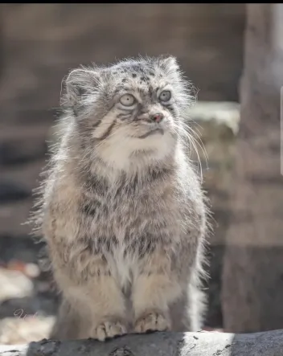
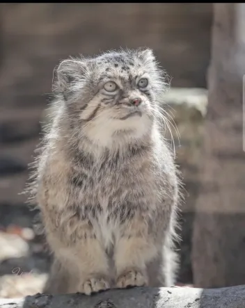

About Tabby
Tabby is the oldest pallas cat in Japan, and Mother to Bol. She is known for her status as the queen manul due to her being the oldest.

Input tabby pass times
Learn about the fascinating Pallas cat named Tabby.
Tabby is the oldest pallas cat in Japan, and Mother to Bol. She is known for her status as the queen manul due to her being the oldest.
Input tabby pass times
